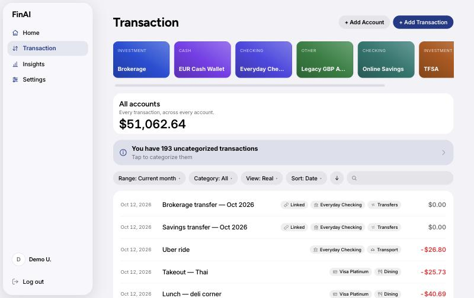
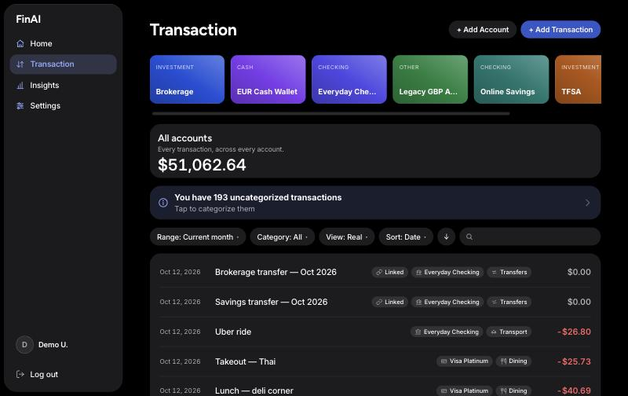
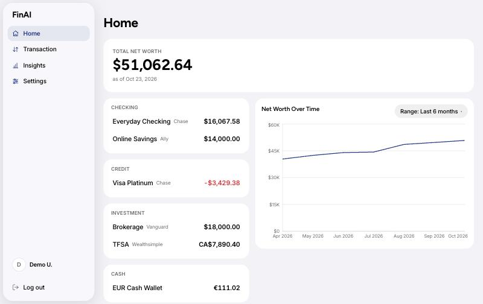
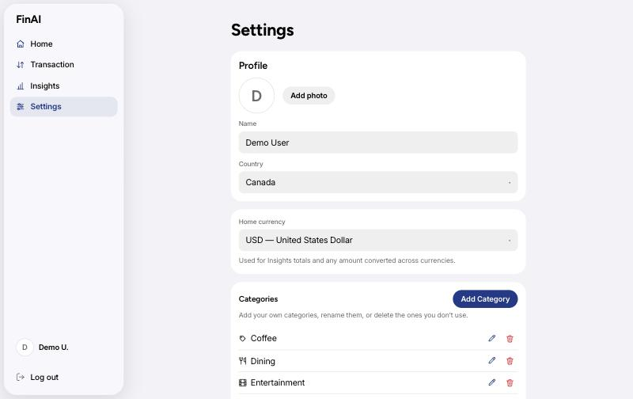
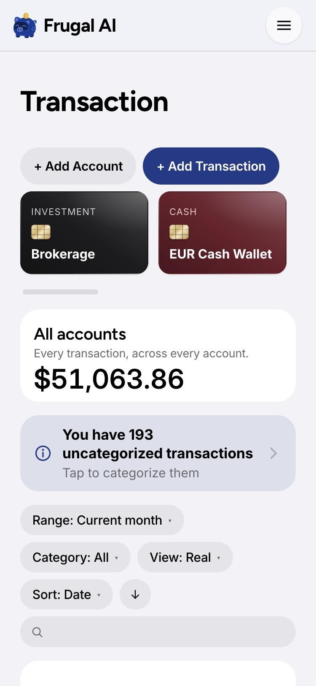

FinAI · Design System · v1.0
The design system behind FinAI's look and feel: the research, the decisions, every token and every component, and how they were applied to the product.
Contents
How to read this document. Every color swatch, type sample and component specimen here is rendered by the product's own stylesheets. Nothing was redrawn. If the CSS changes, rebuild this PDF with python3 docs/design-system/build.py and the document updates with it.
01
The system started with three primary sources and one reference brand:
Read from Apple's own documentation data: Color, Typography, Materials, Layout, Dark Mode, Accessibility, Motion, Buttons, Lists & tables, Sheets, Toggles, Segmented controls, Tab bars, Sidebars, Text fields, Menus, Alerts, SF Symbols, Writing, Inclusion and Charting data. The system colors and type tables come from the HIG's specification tables (June 2025 iOS 26 values, updated Dec 2025 for Liquid Glass).
The semantic color API names (label, secondaryLabel, systemGroupedBackground, systemFill, separator…) became FinAI's token names, so a designer can say "secondary label" and mean exactly one thing.
Apple's community kit, copied into the team's drafts and read through the Figma API: Colors (node 0:1746), Materials (215:105157), Buttons (507:24673), Lists (507:24675), Segmented controls (507:24683) and Sidebars (507:26013). It supplied the iOS 26 label, separator and background values and the Liquid Glass recipes.
wealthsimple.com uses The Future (headings), Wealthsimple Sans (interface) and Tiempos Text (editorial), all commercial or proprietary. FinAI uses the closest open equivalents: Figtree for display and Inter for text.
Apple's WWDC design sessions (Designing Fluid Interfaces, The Details of UI Typography, Principles of Great Design) informed the motion, tracking and principle sections.
02
FinAI's previous look ("Night Ledger") had a strong personality but only a handful of loosely named colors, and those names did double duty: --accent was both a button fill and a text color, and --border was both a hairline and a field outline. The redesign replaces that with a three-tier token architecture. Each tier only talks to the one below it:
Raw values Apple publishes: 12 system colors, their increased-contrast twins and six grays (--sys-indigo, --sys-green-ic, --sys-gray-3). Components never use these directly.
What a value means: --bg-grouped, --label-secondary, --fill-tertiary, --separator, --tint-fill vs --tint-text, --status-positive, --glass-bg, --type-headline, --spring.
The short names the components already used (--bg, --surface, --text, --accent, --outflow), now pointing at the semantic tier. The whole product changed without rewriting 190 inline styles.
| Decision | Why |
|---|---|
Grouped, card-based structure (#F2F2F7 page, white sections) | A finance app is lists of accounts and transactions. Apple's inset-grouped pattern (Settings, Wallet) is the most familiar way to scan grouped data, and it separates sections with background steps instead of borders. |
FinAI Navy as the accent (#1E3A8A) | A brand color, not an Apple system color. The HIG supports this: in an app with mostly monochromatic content, a brand accent is "an effective way to tailor your app experience". Navy signals trust and steadiness for money, and stays clearly apart from the green used for money in. Like Apple's own colors it has a dark-mode pair: --tint-fill lifts to #3256C8 so filled buttons stay visible on black with a white label ≥ 6:1, and --tint-text lifts to periwinkle #8FA8FF for text and icons. Increased-contrast twins are included. |
| Color flags what needs attention | Money is neutral: positive amounts and balances use the primary label color, and only negative amounts turn red (--outflow = --status-negative). A screen full of green income read as noise. Keeping it plain lets the red stand out where it matters: spending, debt and below-zero balances. Green is reserved for success messages. The minus sign still carries direction, so color is never the only signal (HIG: Inclusive color). |
| Accessible secondary label | Apple's 60%-alpha secondary label is about 3.5:1 on white, below the 4.5:1 HIG minimum for text up to 17pt. FinAI uses Apple's opaque increased-contrast gray (#6C6C70 / #AEAEB2) so footnotes and dates pass everywhere. |
| Liquid Glass only in the control layer | HIG: "Don't use Liquid Glass in the content layer." The sidebar, phone drawer, back button, menu button and popovers float in glass; cards, lists and fields stay solid. |
| Capsules for controls, concentric radii for containers | iOS 26 makes buttons, chips and search bars capsules. Containers nest their radii concentrically (inner radius = outer radius − padding), so the corners never fight. |
| Web-safe Apple typography | SF Pro can't be licensed for the web. Figtree and Inter follow Apple's Dynamic Type sizes, leading and size-specific tracking, and amounts use tabular figures instead of a monospace font. |
03
Apple's eight principles, translated into rules a FinAI designer can apply on a Tuesday afternoon.
Every screen answers one money question: how much do I have, where did it go, what needs attention. Anything that doesn't serve that answer doesn't ship.
People stay in control: imports always end on a review step, deletions offer Archive before Remove, and nothing is categorized without being shown.
Financial data is private and consequential. Destructive actions are red, never the primary button, and state their impact ("takes it off 49 transactions").
Use the patterns people already know from iOS: grouped lists, capsule buttons, sheets with a close control, a sidebar with tinted selection, a segmented control.
Light and dark follow the system setting (no in-app toggle). Increase Contrast, Reduce Transparency and Reduce Motion are honored. The layout reflows from a 1280px desktop to a 375px phone.
Hierarchy comes from weight, size and space, not from borders and boxes. One filled button per view; everything else is gray or plain.
Every value is a token, every token has a reason, and every reason is in this document. Tabular figures line up, hairlines are half-pixel, corners nest.
The result, not a layer on top: a glass sidebar that lets color drift beneath it, sheets that rise on a spring, a calm ledger that feels in control.
04
Apple's iOS 26 system colors. Each chip is split into light and dark. Increased-contrast twins (-ic) are used wherever a hue becomes text.
The one color that isn't Apple's. Built to Apple's rules, with a light value, dark-mode lifts and increased-contrast twins.
| Token | Role | Light | Dark |
|---|---|---|---|
--bg-grouped | Page background | #f2f2f7 |
#000000 |
--bg-grouped-secondary | Cards, lists, sections (alias --surface) | #ffffff |
#1c1c1e |
--bg-elevated | Sheets and raised surfaces (alias --surface-raised) | #ffffff |
#2c2c2e |
--label-primary | Primary text (alias --text) | #000000 |
#ffffff |
--label-secondary | Secondary text; accessible opaque gray (alias --text-muted) | #6c6c70 |
#aeaeb2 |
--label-tertiary | Placeholders, disabled, chevrons | rgba(60, 60, 67, 0.3) |
rgba(235, 235, 245, 0.3) |
--fill-tertiary | Field, chip and gray-button fill | rgba(120, 120, 128, 0.12) |
rgba(120, 120, 128, 0.24) |
--fill-quaternary | Row hover, choice backgrounds | rgba(120, 120, 128, 0.08) |
rgba(120, 120, 128, 0.18) |
--separator | Hairlines between rows | rgba(0, 0, 0, 0.12) |
rgba(255, 255, 255, 0.17) |
--separator-opaque | Dashed or high-contrast outlines | #c6c6c8 |
#38383a |
--tint-fill | Filled buttons, selection, checkboxes (alias --accent) | #1e3a8a |
#3256c8 |
--tint-text | Links, tinted text and icons (alias --accent-text) | #1e3a8a |
#8fa8ff |
--status-positive | Success messages only (alias --success) | #008932 |
#30d158 |
--status-negative | Negative amounts, destructive, below zero (alias --danger, --outflow) | #e9152d |
#ff6165 |
Computed from the shipped tokens (WCAG 2.x relative luminance). HIG minimum: 4.5:1 for text up to 17pt, 3:1 for 18pt+ or bold.
| Pair | Light | Dark | Needs |
|---|---|---|---|
Primary text on a card--label-primary on --bg-grouped-secondary | 21.0:1 | 17.0:1 | 4.5:1 |
Secondary text on a card--label-secondary on --bg-grouped-secondary | 5.2:1 | 7.7:1 | 4.5:1 |
Secondary text on the page--label-secondary on --bg-grouped | 4.7:1 | 9.5:1 | 4.5:1 |
Tint text / links on a card--tint-text on --bg-grouped-secondary | 10.4:1 | 7.5:1 | 4.5:1 |
White label on a filled button--on-tint on --tint-fill | 10.4:1 | 6.4:1 | 4.5:1 |
Success (green) on a card--status-positive on --bg-grouped-secondary | 4.5:1 | 8.4:1 | 4.5:1 |
Negative amount / destructive (red) on a card--status-negative on --bg-grouped-secondary | 4.6:1 | 5.8:1 | 4.5:1 |
Why two tints? Filled controls need a white label at ≥ 4.5:1 on the fill, while text needs the fill color at ≥ 4.5:1 on a dark card. Navy can't do either on a black page, so dark mode lifts it twice: --tint-fill to a mid navy #3256C8 (white label 6.4:1, and still visible against black) and --tint-text to periwinkle #8FA8FF (7:1 on a card). In light mode one navy, #1E3A8A, does both (10:1 on white).
The categorical series leads with FinAI Navy, then Apple hues in a fixed order (navy, orange, teal, gold, pink, green, purple, brown). Assign them in sequence and never cycle within a chart's first eight series, so neighbouring categories stay distinguishable for common color-vision differences.
05
Figtree (display), a geometric sans close to Wealthsimple's The Future, sets titles. Inter (text), the open neo-grotesque nearest Wealthsimple Sans and Apple's SF Pro, sets everything else. Sizes, leading and weights are Apple's Dynamic Type "Large" defaults (17pt body, 11pt minimum). Tracking tightens as display sizes grow and stays near zero for text, following SF's tracking tables. Money uses font-variant-numeric: tabular-nums so columns align without a monospace font.
06
--space-14px--space-28px--space-312px--space-416px--space-524px--space-632px--space-748pxHit targets: 44 × 44pt minimum (--hit-min). Controls are 36px on desktop and grow to 44px on touch screens (@media (pointer: coarse)). Fields are 44px everywhere.
An inner radius equals the outer radius minus the padding between them, so nested shapes share a center (iOS 26). Example: the sidebar (26) with 12px padding holds links at 14.
--radius-xs6px · Card thumbnails--radius-sm10px · Fields, icon cells--radius-md14px · List rows, menu rows, choices--radius-lg22px · Cards, lists, menus--radius-xl26px · Sidebar, auth panel, dropzone--radius-sheet34px · Sheets (modals)--radius-fullcapsule · Buttons, chips, search, togglesA floating sidebar (15rem) on the left, page content on the grouped background with a Large Title, cards (.card) for sections, and inset grouped lists for data. Below 768px the sidebar becomes a glass drawer opened from a 44pt menu button, and filter chips wrap.
07
Two families, used for different layers (HIG > Materials):
| Material | Recipe (from the Figma kit) | FinAI uses it for |
|---|---|---|
| Liquid Glass, regular | Light: rgba(245,245,245,.6) over a color-dodge layer, shadow 0 8 40 rgba(0,0,0,.12). Dark: 67% of a rgba(0,0,0,.6) stack. Web: --glass-bg + blur(24px) saturate(180%) + a bright inner top edge. | Sidebar, phone drawer, back button, menu button |
| Glass, strong | The regular variant at ~90% opacity. The HIG says to use the regular, more opaque variant for components with a lot of text (popovers, sidebars). | Menus, pickers, calendar popovers |
| Standard material, regular | Light: blur 50 + rgba(255,255,255,.6). Dark: blur 50 + rgba(0,0,0,.41). | --material-thin (content-layer overlays) |
| Scrim | HIG: dim bright content 35% behind clear glass and modals. | Sheet backdrop, drawer backdrop |
Rules. Never stack glass on glass. Never use glass for content (cards, rows, fields). With prefers-reduced-transparency, glass becomes the solid elevated background. With prefers-contrast: more, glass rises to 94–98% opacity. The phone top bar uses a scroll-edge hairline instead of a hard divider.
08
Apple's fluid-interface guidance: respond on press, keep motion brief and interruptible, and prefer springs to fixed curves. CSS can't run a live spring, so FinAI samples Apple's default UI spring (damping 1.0, response 0.35s, critically damped, no overshoot) into a linear() curve: --spring.
--duration-fast | 120ms | Hover, press, color changes |
--duration-base | 250ms | Popovers, chevrons, segmented thumb |
--duration-spring | 500ms | Sheets, drawer, progress bars |
--ease-out | cubic-bezier(.2,.8,.2,1) for small state changes | |
:active, giving feedback on pointer-down rather than on release.--spring. The drawer enters and leaves along the same edge (spatial consistency).prefers-reduced-motion), and nothing depends on motion to communicate.09
Live specimens rendered by components.css, in light and dark.
.btn.btn-primary: the one most likely action per view (HIG: use style, not size, to rank choices)..btn-secondary: default and Cancel. Tinted .btn-tinted: emphasis without competing with Filled..btn-danger: red tint, solid red on hover. Never the primary role.input · .field-select · date--fill-tertiary background, no border, 10pt corners, 44px tall, Body 17.--focus-ring).--label-tertiary..dropdown--fill-tertiary at 14pt (concentric)..date-panel.txn-list--amount-positive); negative amounts are red (--outflow)..card: a grouped section with 22pt corners and no border (the background step separates it)..notice-box: a tappable tip row with a tint-soft background, tint icon and disclosure chevron..alert: tinted, borderless inline status. Apple reserves modal alerts for critical, actionable moments..sheetAre you sure?
Archive: hides it from category pickers.
--spring..app-rail: floating Liquid Glass, 8px inset, 26pt corners. Links are Callout/500 with tint icons, and the selected link gets a tint-soft background..back-button: a 44pt glass circle, the iOS 26 toolbar back button..segmented: a gray capsule track with a raised thumb on the selected segment. Equal segments, noun labels, at most five on a phone..search-input: a capsule search bar with a filled clear button (see the Transaction screenshot).| Component | Class / file | Apple reference |
|---|---|---|
| Button | .btn · Button.tsx | Buttons (filled / gray / tinted / destructive) |
| Text field | input · index.css | Text fields (grouped form) |
| Select / date / suggest | .field-select · FieldSelect, FieldDatePicker, SuggestInput | Pop-up buttons, date pickers |
| Filter chip + menu | .dropdown · SelectDropdown, MultiSelectDropdown, DatePickerDropdown | Menus, popovers |
| Checkbox | input[type=checkbox] | Toggles (checkmark style) |
| Segmented control | .segmented · SegmentedControl.tsx | Segmented controls |
| Card / section | .card · Card.tsx | Lists (inset grouped) |
| Transaction list | .txn-list · TransactionRow.tsx | Lists and tables |
| Chip / badge | .txn-chip, .badge | Tokens / labels |
| Notice / banner | .notice-box, .alert | Alerts (non-modal guidance) |
| Sheet | .sheet · Modal.tsx, ActionMenu.tsx | Sheets |
| Sidebar / drawer | .app-rail · AppLayout.tsx | Sidebars, tab bars |
| Back / icon buttons | .back-button, .icon-button | Toolbars |
10
All text pairs measured in section 04 pass 4.5:1 in light and dark. Secondary text uses Apple's accessible gray, and colored text uses the increased-contrast twins.
prefers-contrast: more switches separators to opaque, darkens secondary labels, deepens the navy tint (#142A66, or #B4C6FF text in dark mode) and makes glass nearly solid.
prefers-reduced-transparency replaces every glass and material surface with the solid elevated background.
All transitions and animations become instant. No information is conveyed by motion alone.
44pt minimum on touch. Every control is a real button or input with a visible 2px tint focus ring. Custom selects use the select-only combobox pattern with full keyboard support.
Amounts carry a sign, uncategorized chips are outlined (not just gray), selected states add a ring or checkmark, and destructive actions say what they'll do.
11





| Shell | Opaque bordered rail → floating glass sidebar. Phone drawer is a glass panel on a spring. Back and menu buttons are glass circles. |
| Lists | Per-row tiles → one inset grouped list with hairlines. Monospace dates and amounts → tabular Inter. |
| Controls | 8px bordered buttons → capsules in four Apple styles. Bordered fields → filled 44px fields. Square checkboxes → round checkmarks. |
| Overlays | Bordered modals → 34pt sheets with a scrim and a close circle. Opaque menus → glass popovers. |
| Color | Acid-lime accent on violet-black → FinAI Navy on Apple grouped backgrounds. Coral expenses and green balances → plain positive amounts, red only for negatives. |
| Type | Bricolage Grotesque + Inter at mixed sizes → Figtree + Inter on Apple's Dynamic Type scale. |
12
apps/web/src/index.css | Token layer (primitives → semantic → aliases), dark / increased-contrast / reduced-transparency overrides, base type, form fields, checkbox. |
apps/web/src/styles/components.css | Every component, in sections. Values reference tokens only. |
apps/web/index.html | Figtree + Inter (Google Fonts), light and dark theme-color. |
Modal.tsx, Button.tsx | Sheet classes instead of inline styles; the new tinted button variant. |
docs/design-system/ | This document (build.py → HTML → PDF) and the product screenshots. |
--accent for fills, --accent-text for text and icons, --text-muted for secondary text, --separator for hairlines.FieldSelect, FieldDatePicker and SuggestInput in forms, and SelectDropdown, MultiSelectDropdown and DatePickerDropdown in filter bars.